Design Brief
Stadium Case
Design brief, style and mood · 2026-11-28
A small capsule-shaped case: a fine woven lid over a smooth matte blue-gray base, joined by one thin amber line. Quiet, tactile, made to be kept. The brief sets the look and mood through twelve views, from hero and use to form, construction intent, colorways and market; size, materials and construction are left to product development.
 (01) Hero: studio view, three-quarter angle.
(01) Hero: studio view, three-quarter angle.
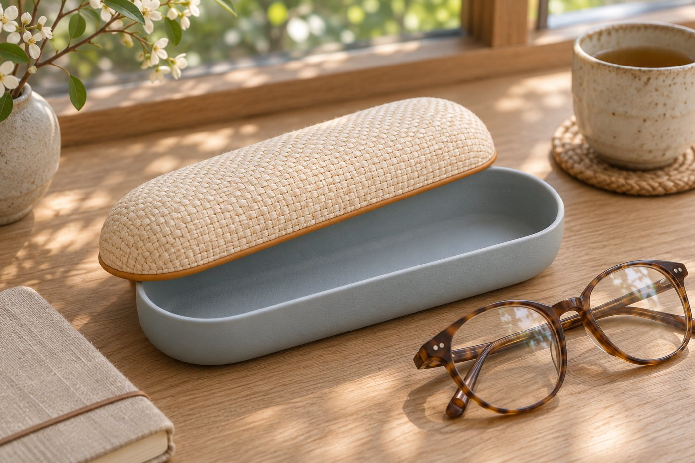
(02) In use: open on a desk, glasses inside.
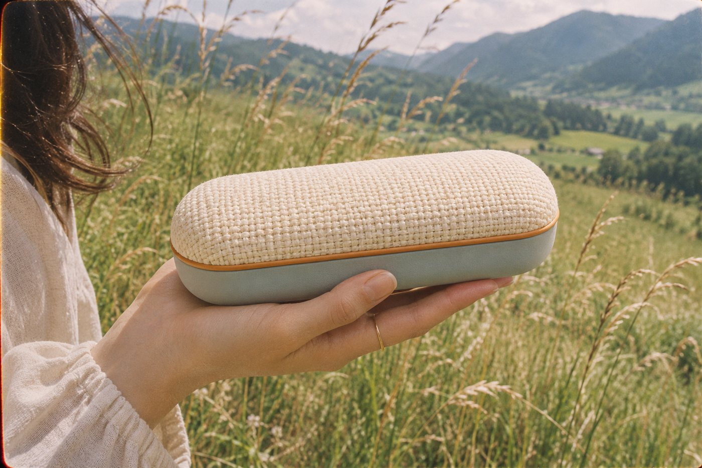
(03) In use: carried in the hand, outdoors.
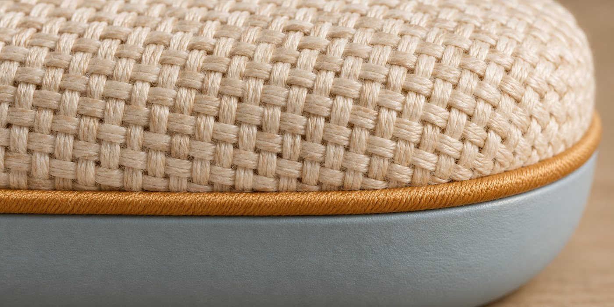
(04) Material detail: woven lid, piping, matte base at the seam.
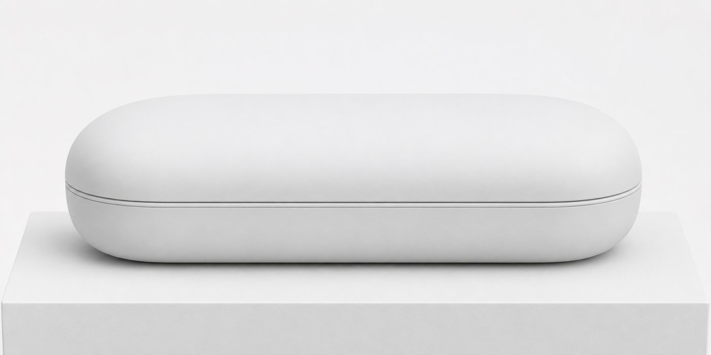
(05) Form: clay study, one material, no texture.
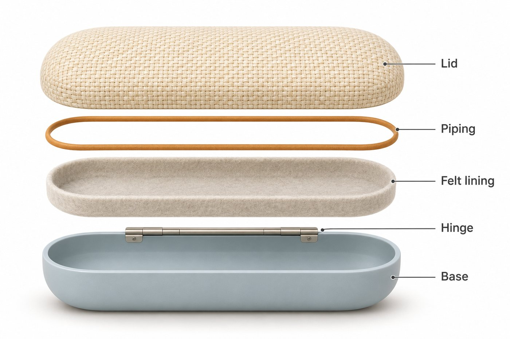
(06) Construction intent: exploded view (lid, piping, lining, hinge, base).
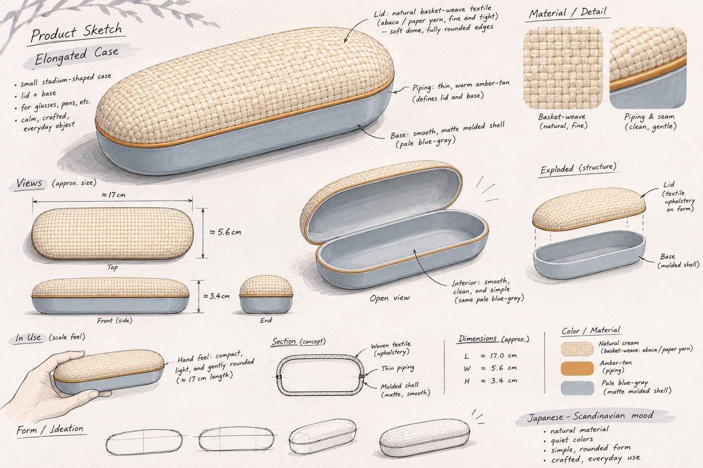
(07) Construction intent: marker sketch sheet, views and notes.
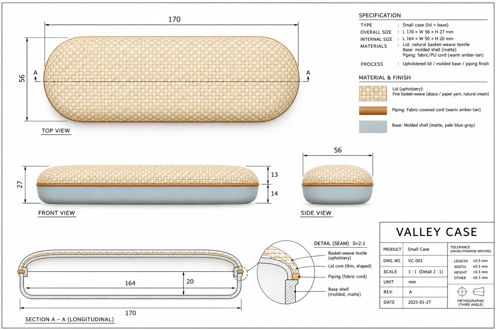
(08) Construction intent: orthographic study with rough sizes; not a specification.
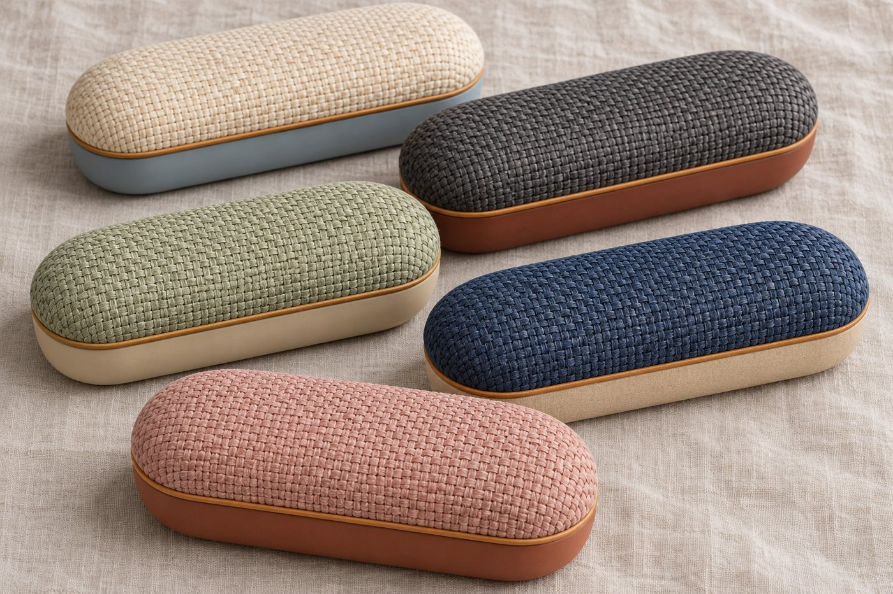
(09) Colorways: the original and four alternates.
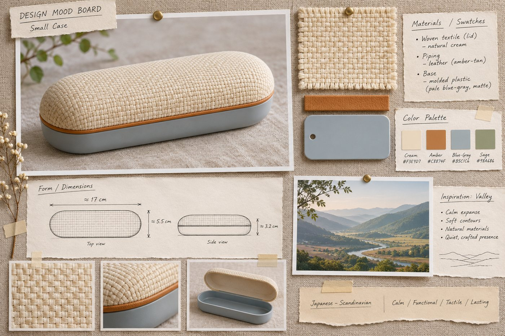
(10) Mood board: material, palette, form and setting.
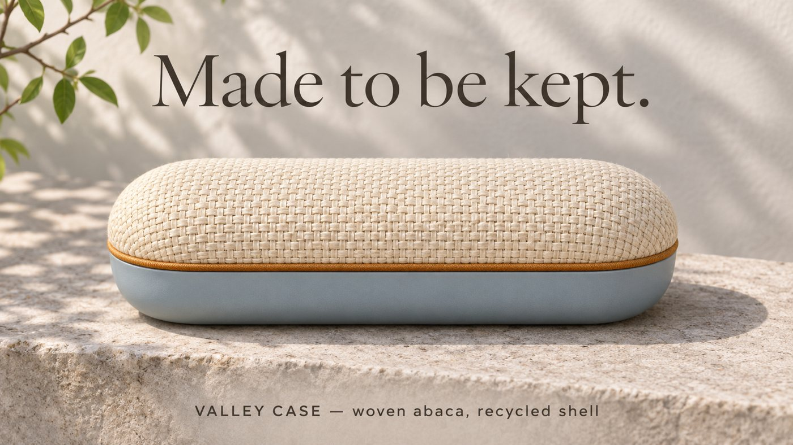
(11) Market expression: campaign image with headline (name is a placeholder).
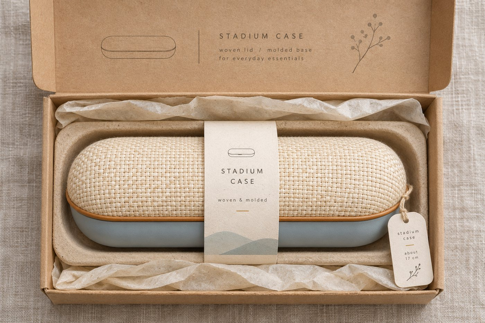
(12) Market expression: packaging and opening moment.Overview
A small closed case, stadium-shaped in plan (a long capsule, about three to one), low and softly domed, about 17 cm long: a case for glasses, pens or small tools. Two parts: a lid wrapped in a fine woven textile over a smooth matte molded base, joined by one thin warm piping line at the seam. (01)
Mood
Quiet, soft, tactile and calm. Craft meets object: a natural woven top on a matte, almost ceramic body. Japanese and Scandinavian in feeling: understated, made to last, a personal object you want to hold and keep. Not technical, not sporty. (10)
Style direction
- Form
- one continuous rounded outline, no sharp corners; lid and base share the same capsule plan so the seam reads as a single line.
- Hero material
- the woven lid carries all the texture; everything else stays calm.
- Accent
- the piping is the only warm contrast and the only line.
- Balance
- about two thirds natural texture, one third calm solid.
Color and finish
Read from the images, not measured or matched to a color standard.
| Part | Color | Finish |
|---|---|---|
| Lid | Cream, warm light straw | Fine basket weave, slight fiber variation |
| Piping | Amber tan | Low sheen, leather-like |
| Base | Pale blue-gray | Smooth matte, slight satin |
Material and detail
The seam is where the design is judged: weave, piping and base meet in one clean line. The lid textile is a tight checkerboard basket weave in a natural paper or abaca-like yarn; the piping is a firm round cord; the base is an even matte shell with a rounded bottom edge. (04)
Use and context
Lives on a desk, in a bag, in the hand. It opens wide enough to lift out glasses or pens at a glance and closes to a smooth pebble that slips into a bag. (02, 03)
Form
The form must hold without its surface: in one plain material the capsule still reads as soft and complete, the parting line a single groove. (05)
Construction intent
How the look could be built, for discussion; product development decides. A wrapped lid shell, a piping band, a felt lining and a hidden hinge over a molded base. Rough sizes from the study: about 170 x 56 x 37 mm. (06, 07, 08)
Colorways
The original (cream lid, blue-gray base) and four alternates that keep the logic of a textured lid over a calm base with a warm line: charcoal, sage, navy and dusty rose lids over tan or cream bases. (09)
Market expression
How the product could speak at sale: a quiet headline ("Made to be kept."), natural light, kraft packaging with a paper band and a hand tag. Names on the images are placeholders. (11, 12)
Open to product development
- Final size and use (glasses, pens, tools).
- Lid textile, yarn and weave method; how it is wrapped and edged.
- Base material and process; closure; hinge; lining.
- Colorway range and cost.
The brief fixes the look and mood; every detail above can change.
Credits and rights
AI-generated product looks made for this brief from the designer's own 3D mockup (image model); looks, not a construction. Names and sizes on the images are placeholders.